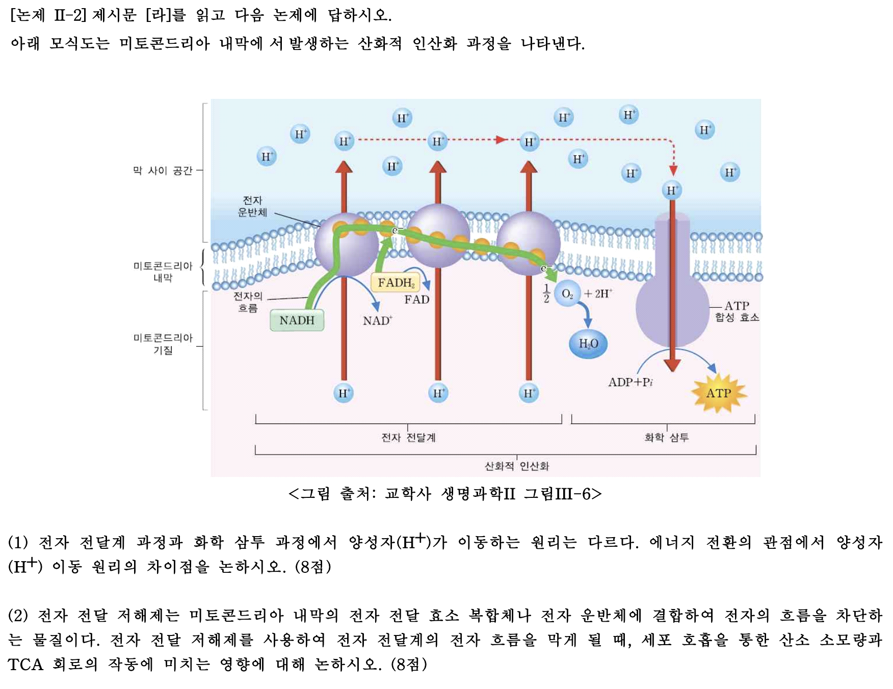

제시문
[라] 세포 호흡은 세포가 영양분으로부터 생명 활동에 필요한 에너지를 얻는 과정이다. 세포 호흡의 과정은 해당 과정, 피루브산 산화와 TCA 회로, 산화적 인산화의 3단계로 이루어진다. 그 중 산화적 인산화는 미토콘드리아 내막에서 전자 전달계와 화학 삼투에 의해 ATP가 합성되는 과정이다. 해당 과정과 TCA 회로를 통해 생성된 NADH와 \(FADH_2\)는 전자 전달계에 고에너지 전자를 전달한다. 전자 전달계를 거치면서 에너지 수준이 낮아진 전자는 최종적으로 \(O_2\)에 전달되고 \(H^+\)과 결합하여 물이 생성된다.
논제 II-2
제시문 [라]를 읽고 다음 논제에 답하시오.

아래 모식도는 미토콘드리아 내막에서 발생하는 산화적 인산화 과정을 나타낸다.
(1) 전자 전달계 과정과 화학 삼투 과정에서 양성자(\(H^+\))가 이동하는 원리는 다르다. 에너지 전환의 관점에서 양성자(\(H^+\)) 이동 원리의 차이점을 논술하시오. (8점)
(2) 전자 전달 저해제는 미토콘드리아 내막의 전자 전달 효소 복합체나 전자 운반체에 결합하여 전자의 흐름을 차단하는 물질이다. 전자 전달 저해제를 사용하여 전자 전달계의 전자 흐름을 막게 될 때, 세포 호흡을 통한 산소 소모량과 TCA 회로의 작동에 미치는 영향에 대해 논술하시오. (8점)